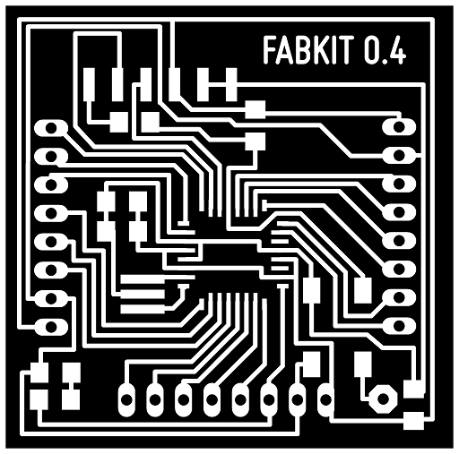

Week 4
The design thinking week

Week 4: The design thinking week
In this week the trainer for us is Mr Luciano Betoldi, who hails from Protugal. He is guru to Mr Francisco Sanchez. To be frank this I was not at all regular in attendance. I had to stay away most of the time from the lab.
Day 1: Brainstroming
Necessity is the mother of Innovations
Luciano started the day by explaining on what designing thinking is all about. It involves cycle of activities Ask Imagine Plan Create Improve. Here desiging is made based on a problem identified and is purely based for a particular situation and ma not be applicable to the masses. Luciano made a demonstration of the Brainstroming activity for us. The session began with listing out what are the things that are not available in the fablab. So we all shouted items one by one. He started listing it down in the white board. He then took the problems one by one made us think how to solve the problem . Well that was really an interesting experience.
Later that day, Luciano explained on the Fabduino board. He gave us the details and asked to try it out. He milled out fabduino pcb. The core of the Fabduino is the Atmega328. To solder the legs of this processor one by one is a very difficult task so Luciano taught us an easy way to solder it. Fix any one leg in the corner accurately in the PCB. After that he simply poured in the solder to legs of the processor. He then placed copper braid over the legs placed the solder ion on top and gently removed it. It was one of the perfect soldering I have ever seen. Likewise he removed all the excess solder from the board. Its not really easy as it seems. I found it really difficult when I tried out the same shown below. 